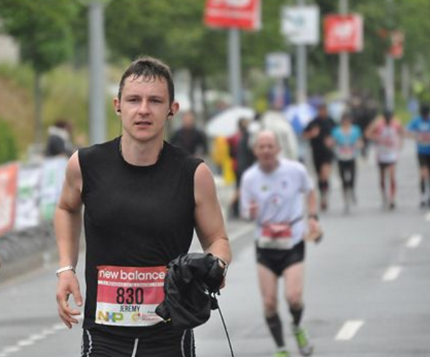

Mai 2010. J’arrête de fumer et je me mets à la course à pied. Je cours environ 2 fois 10 km par semaine pendant 2 ans. Je rencontre des marathoniens qui me motivent. C’est décidé, je m’inscris pour le marathon de Caen en Juin 2012.
Janvier 2012. Je me lance dans un entrainement de 3 sorties par semaine. Une longue distance (au moins 15km), une sortie plaisir (10km) et une sortie cardio (fractionné) par semaine. J’ai la patate, la motivation bat son plein ! C’est facile. Toutefois, après quelques semaines, la sortie cardio devient un peu pénible.
Février 2012. La sortie cardio est vraiment pénible.
Mars 2012. Je déteste cette sortie cardio.
Avril 2012. J’esquive quelques sorties cardio.
Mai 2012. Je reprends sans conviction les sorties cardio.
Juin 2012. Le jour J arrive enfin. La veille, je dors bien, je me sens bien, je suis prêt. Je me lève et mange tôt pour que la digestion ne se fasse pas pendant la course. Je m’entraine un peu avec les autres participant/e/s.
Un coup de feu est tiré. Je m’élance. J’ai la pêche, ça va le faire. Mon but, c’est juste de finir la course, si possible en moins de 4 heures.
5km. Je dépasse pas mal de personnes. Je suis confiant, je prends plaisir.
10km. Il se met à pleuvoir. On est dans le nord, pas de surprise.
15km. Je cours vite finalement, c’est plus facile que je croyais. J’vais peut-être le finir en 3h30, héhé!
20km. Je suis trop fort, la vie est trop belle, rien ne m’arrêtera !
25km. Oh tiens, un point de ravitaillement, un petit carré de chocolat ? je ne dis pas non. Ça me tire un peu les jambes, je n’aurais pas dû ralentir.
28km. J’ai mal. Va pour le finir en 4 heures, c’est bien 4 heures.
30km. Wooo ! ça pique ! Je sens sévèrement mes jambes. Allez, on ne lâche rien. Non, ne ralentis pas. C’est le trentième kilomètre, c’est normal. Allez hop, on y va.
35km. Mais pourquoi ?! Pourquoi je fais ça ? Faut être masochiste, c’est quoi le délire ? J’arrête. Si, si j’arrête. Tais-toi, je te dis que j’arrête alors j’arrête. J’ai mal. Ma jambe, mes jambes, mes pieds. Aie ! Aie ! Il est où le plaisir là ? Aie !
38km. Sérieux?! Je n’ai couru que 3 km depuis tout à l’heure?! Vous avez fait une erreur de mesure là, ça doit être la fin. Encore combien ?! 5 km de plus ?! J’veux rentrer chez moi. Maman ! Du chocolat ! Aie !
40km. Allez Jé, on ne s’arrête pas. 2 km et c’est fini. Allez courage. Tais-toi et cours! Souris au photographe. Ok, tant pis pour le photographe. Allez, écoute les gens, ils t’encouragent. Allez mon vieux. 6 mois d’entrainement, t’as pas le droit de lâcher maintenant. Courage…

À quelques centaines de mètres de la fin : deux lignes parallèles de personnes qui applaudissent, sourient et crient. J’ai accéléré et tout donné jusqu’á la ligne d’arrivée, complètement cassé mais heureux au possible ! J’ai marché comme un canard jusqu’au surlendemain mais ça valait le coup, bon sang, ça valait le coup !
Bref, c’est un super souvenir et un puissant
sentiment d’achèvement.
J’ai fini ce premier marathon en
4h14. Depuis, je me suis décidé à en courir un tous les 3 ans car
l’entrainement est vraiment coûteux en temps et énergie…
Et je n’aime pas la sortie cardio !